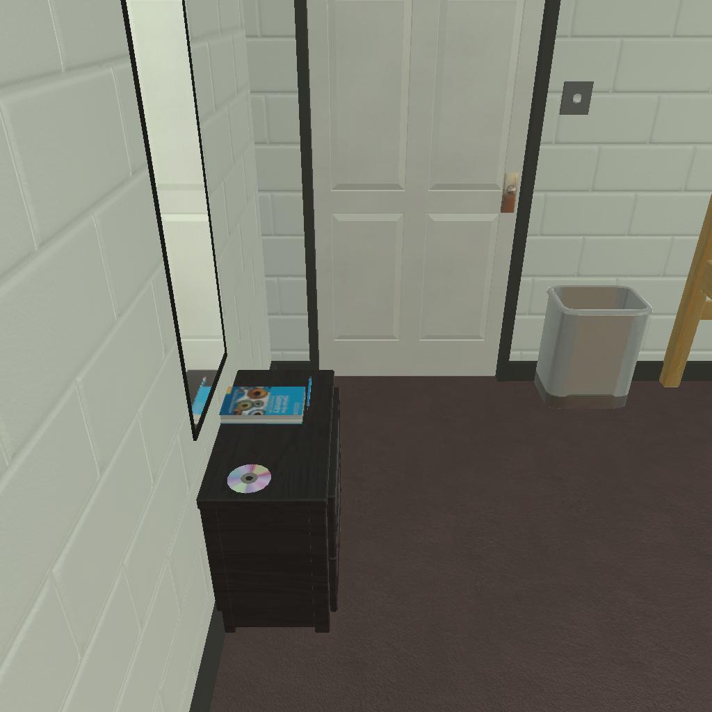

---------------------------------------------------------task: 8---------------------------------------------------------
--------------------------------------------------------------------------------------------------------------------------------------------------------------------
--------------------------------------------------------------------------------------------------------------------------------------------------------------------
Step:--------------------------------------------------------------------------1-------------------------------------------------------------------------------
----------------------------------------
VLM Prompt:
Image1:
Image2:
**Instruction**
1. Analyze the provided images to identify all visible household objects and compare the difference between images (e.h. whether the object is opened or not and taken on hand or not), focusing on those relevant to the task description "put some laptop on desk."
2. Use the analysis of images and the task hint "The agent must find an object of the desired type, pick it up, find the correct location to place it, and put it down there." to answer the question: what is the most reasonable action in the choices for the task description "put some laptop on desk"?
3. Decide and write the answer using the template: The answer is: (i): , where i is the real number. If there is no desired object in images, search every place based on **Initial Observation** to find the object. And if no one is exactly correct, choose a similar answer.
**Initial Observation**
You are in the middle of a room. Looking quickly around you, you can see bed (1), garbagecan (1), desk (1), sidetable (1), drawer (1-5), laundryhamper (1)
**Answer Choices**
(1): go to bed 1
(2): go to garbagecan 1
(3): go to desk 1
(4): go to sidetable 1
(5): go to drawer 1
(6): go to drawer 2
(7): go to laundryhamper 1
(8): go to drawer 3
(9): go to drawer 4
(10): go to drawer 5
**Answer**
Let's think step by step by following the instructions.
----------------------------------------
----------------------------------------
Original Response:
First, we analyze the provided images. In both images, we can see a sidetable with a magazine or brochure and a CD on it, a mirror, a door, a garbage can, and a small portion of what appears to be a wooden object, possibly a bedpost or part of a desk. There is no visible laptop on the desk, sidetable, or any other visible surface in the images.
Now, using the analysis and the task hint, we understand that the agent must find a laptop, pick it up, and then put it on the desk. Since the laptop is not visible in the images provided, the agent should search the locations mentioned in the initial observation to find the laptop.
Based on the initial observation, the most reasonable places to look for a laptop would be on or inside the desk or drawers, as these are typical places one might store a laptop.
Given the answer choices, the best action for the task "put some laptop on desk" would be to first go to the desk or one of the drawers to search for the laptop. Since "go to desk 1" is one of the options and it is the most direct action related to the task description, we will select that.
The answer is: (3): go to desk 1
----------------------------------------
----------------------------------------
>>> Refine Original VLM Response and Get Pure Action: go to desk 1
----------------------------------------
-----------------------------------------------------------------
Running time: 10.643551349639893 seconds
Total Money: 3.451630000000001
-----------------------------------------------------------------
-----------------------------------------------------------------
Text Observation:You arrive at loc 2. On the desk 1, you see a alarmclock 1, a cellphone 1, a pencil 1, and a pen 1.
-----------------------------------------------------------------
UNSUCCEED